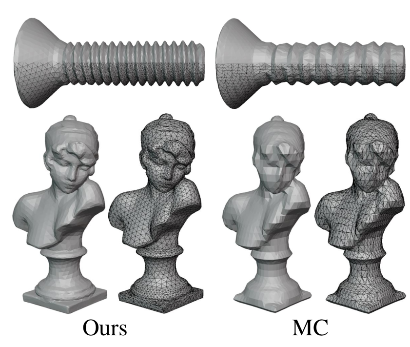

|
Wentao Wang (王文韬) I'm a second-year master student of Huazhong University of Science and Technology(HUST), supervised by Prof. Wenbing Tao. Prior to that, I recived B.E. degree from Huazhong University of Science and Technology(HUST) in 2023. My research interests mainly focus on 3D Reconstruction/ Novel View Synthesis. |

|
News
|
Education Background
Master of Philosophy (M.Phil.)Huazhong University of Science and Technology (HUST), 2023 - Present 3D scene reconstruction | Novel view synthesisBachelor of EngineeringHuazhong University of Science and Technology (HUST), 2019 - 2023 Robotics competition (RoboMaster, Organized by DJI) | Invention patent (Epidemic prevention robot)High School DiplomaYiling High School, Hubei, 2016 - 2019 National Olympiad in Informatics in Provinces (NOIP) | A time full of memories... |
ResearchI'm interested in computer vision, 3D scene reconstruction and novel view synthesis. |
|

|
High-Fidelity Lightweight Mesh Reconstruction from Point Clouds
Chen Zhang, Wentao Wang, Ximeng Li, Xinyao Liao, Wanjuan Su, Wenbing Tao CVPR, 2025 (Highlight) cvpr page We propose an adaptive meshing method to extract resolution-adaptive meshes based on surface curvature, enabling the recovery of high-fidelity lightweight meshes. |
|
Feel free to steal this website's source code. Do not scrape the HTML from this page itself, as it includes analytics tags that you do not want on your own website — use the github code instead. Also, consider using Leonid Keselman's Jekyll fork of this page. |